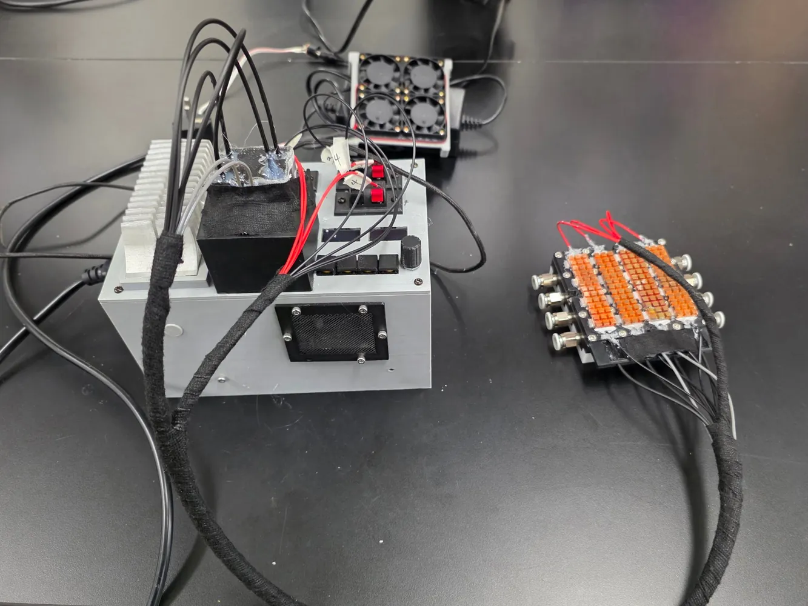
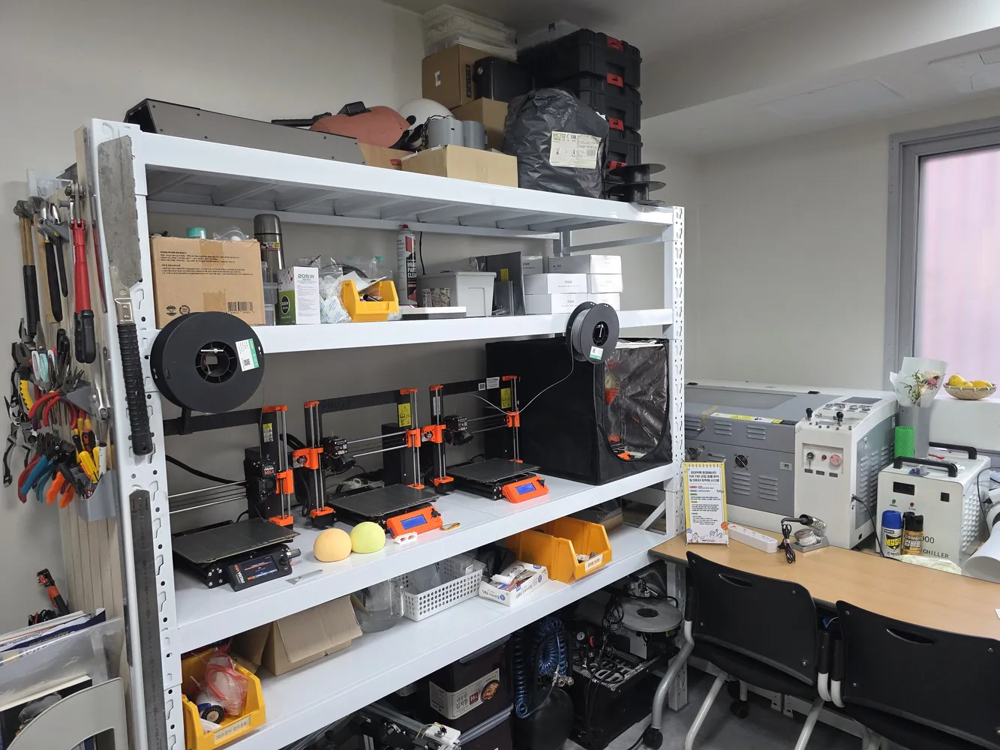
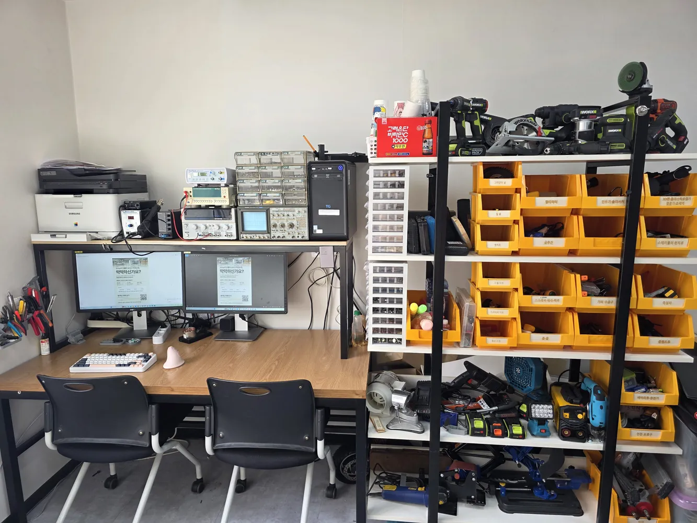
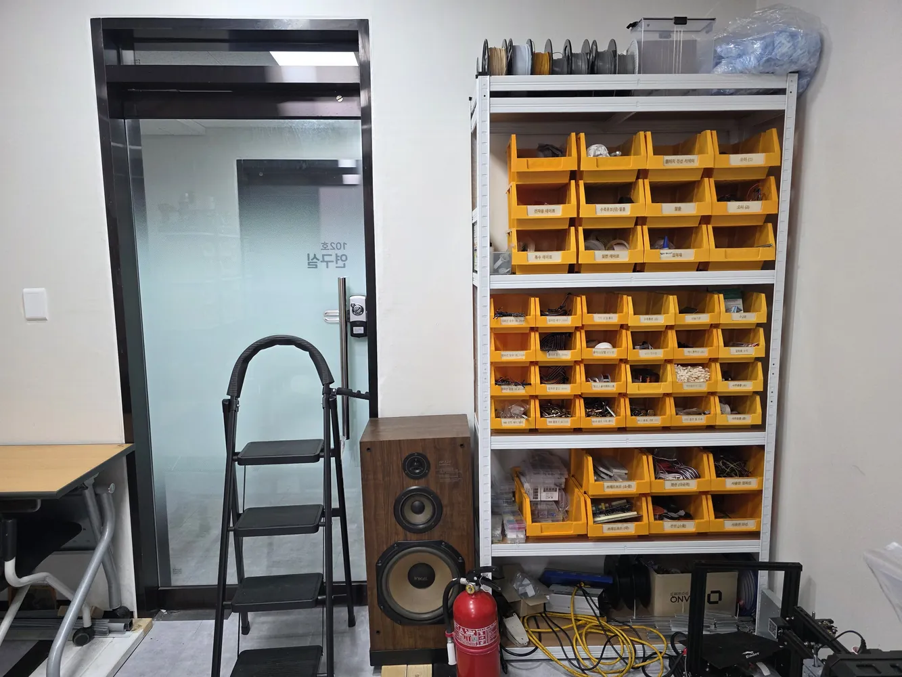

전공 지식과 아이디어는 있는데 장치를 만들 사람이 없다면, 참여할 UB 부원을 연결해 드립니다.
예를 들어 생명과학 전공 학생들이 의료 장치를 만들려 한다면, 생명과학 쪽은 그 학생들이, 회로와 기구는 UB 부원이 맡아 한 팀으로 진행합니다. 대신 만들어 드리는 의뢰가 아니라 함께 참여하는 방식입니다.
연구 장치, 어떻게 만들지부터 같이 봐 드립니다. 상담은 무료이고, 의뢰까지 안 가도 됩니다.
오픈채팅으로 문의하기



연구 내용은 외부에 공개하지 않습니다.
전공 지식과 아이디어는 있는데 장치를 만들 사람이 없다면, 참여할 UB 부원을 연결해 드립니다.
예를 들어 생명과학 전공 학생들이 의료 장치를 만들려 한다면, 생명과학 쪽은 그 학생들이, 회로와 기구는 UB 부원이 맡아 한 팀으로 진행합니다. 대신 만들어 드리는 의뢰가 아니라 함께 참여하는 방식입니다.
없습니다. 가능 여부, 제작 방법, 부품과 재료 추천까지 무료로 도와드립니다.
상담과 제작 내용은 외부에 공개하지 않습니다.
네. 어떤 실험을 하려는지, 어떤 부분에서 막혔는지만 알려 주시면 함께 정리해 드립니다.